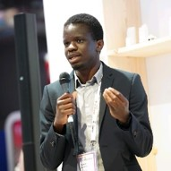
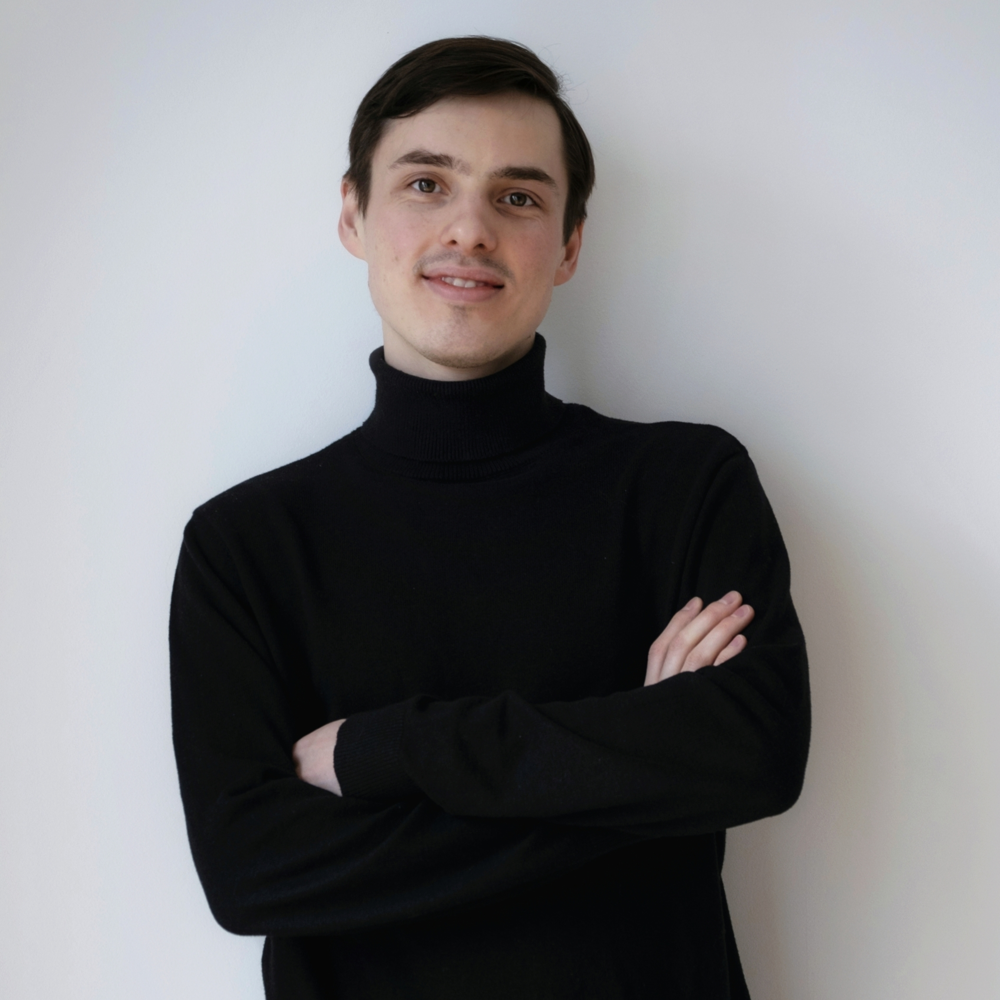

Welcome to the Time series and Transfer learning team of Paris Noah's Ark Lab.
We work on time series, foundation models, and other exciting topics. Check out huggingface page for more details.
Our Team
Keli Zhang
Principal research engineer

Malik Tiomoko
Senior research engineer

Vasilii Feofanov
Senior research engineer
Ievgen Redko
Team lead
Shifeng Xie
Intern (Télécom Paris)
Ambroise Odonnat
Ph.D. student

Lei Zan
Postdoctoral intern

Zehao Xiao
Postdoctral researcher
Recent news
- We organize a workshop on time series foundation models at NeurIPS'25! Follow this link for more details!
- Our team members co-authored papers to be presented at ICLR'25, CVPR'25 and ICML'25!
- Our team open-sourced a state-of-the-art time series foundation model for time series on huggingface hub!
- Our team will present 2 papers at the main track of NeurIPS'24!
- Our team will present 3 papers at the main track of ICML'24!
- We open-source a simple transformer model that achieves state-of-the-art in time series forecasting!
- Our team has two papers accepted at AISTATS'24! We introduce priors for more efficient transfer learning
and solve confidence estimation problem in semi-supervised learning under distribution shift. - We've organized a workshop on time series analysis and transfer learning in Paris Noah's Ark Lab.
- A runner-up for a best paper award at UAI'23 on tensor learning! Paper is available here.
- A paper on computational optimal transport accepted to TMLR! Paper is available here.
- 3 papers on amortized optimization, semi-supervised and multi-task learning are accepted to ICML'23!
- 1 paper on optimal transport for domain adaptation accepted to AAAI'23! Paper is available here.
- 1 paper on continual learning accepted to ICLR'23! Paper is available here.